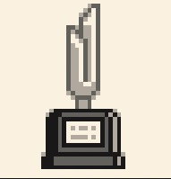

大会一覧
ストーリー中に登場する全16大会+エンディング後2大会の、開催地・コース種類・賞金/賞品・パーツレベル目安・対戦相手の正確な順番と個別賞金をまとめています。大会は基本的にストーリーの順番どおりにしか参加できません(一部の草レースを除く)。攻略の流れは攻略チャート(通常)もあわせてどうぞ。
📷 オフィシャル常勝ガイド「2.グランドスラムへの道」p.66-94、および「レース一覧データ」p.88-91の写真から転記(2026/07/29分)。紹介コメントは独自の言葉でまとめ直しています。
■ 第1部:オータムカップ編
| コース種類 | 1 | パーツレベル目安 | 1 |
|---|
| 賞金 | なし | 賞品 | なし |
|---|
| トロフィー | × |
|---|
| # | 対戦相手 | 賞金 | マシン |
|---|
| 1 | まもる | 230G | |
| 2 | しょうた | 230G | |
初めての草レース。買ったばかりのマシンで挑む。
| コース種類 | 1 | パーツレベル目安 | 1 |
|---|
| 賞金 | 750G | 賞品 | コーナリングコース1 |
|---|
| トロフィー | ○  |
|---|
| # | 対戦相手 | 賞金 | マシン |
|---|
| 1 | たくや | 230G | |
| 2 | ケンタ | 300G | |
| 3 | まこと | ― | |
記念すべき大会初優勝を目指す、最初のカップ戦。
| コース種類 | 1・2 | パーツレベル目安 | 1 |
|---|
| 賞金 | なし | 賞品 | なし |
|---|
| トロフィー | × |
|---|
| # | 対戦相手 | 賞金 | マシン |
|---|
| 1 | ケンタ | 260G | |
| 2 | たくや | 360G | |
公園でなわばりを荒らしたと因縁をつけてくる黒沢(ブラックセイバー軍団リーダー)関連の一戦。
| コース種類 | 1・2 | パーツレベル目安 | 1 |
|---|
| 賞金 | 1020G | 賞品 | オフロードコース1 |
|---|
| トロフィー | ○ |
|---|
| # | 対戦相手 | 賞金 | マシン |
|---|
| 1 | ロクカワ | 260G | ブラックセイバー |
| 2 | ティモタ | 340G | ブラックセイバー |
| 3 | マサ | 430G | ブラックセイバー |
| 4 | 黒沢 | ― | ブラックセイバー |
出場者がブラックセイバー軍団ばかりの危険な大会。勝つと土屋博士が登場する。
| コース種類 | 1・2・3 | パーツレベル目安 | 1 |
|---|
| 賞金 | 1400G | 賞品 | コーナリングコース2+横2段ボックス+シルバーパーツ1種類 |
|---|
| トロフィー | ○ |
|---|
予選:タイム00:27:00(コーナリングコース1)
| # | 対戦相手 | 賞金 | マシン |
|---|
| 1 | ティモタ | 300G | ブラックセイバー |
| 2 | マサ | 400G | ブラックセイバー |
| 3 | まこと | 500G | セイバー600 |
| 4 | 黒沢 | 600G | ブラックセイバー |
| 5 | 藤吉 | ― | スピンコブラ |
予選はタイムアタック(コーナリングコース1・27秒00以内)。4大メジャーカップ最初の関門。新ライバル藤吉が参戦。
■ 第2部:ウインターカップ編
| コース種類 | 1・2・3・4 | パーツレベル目安 | 1 |
|---|
| 賞金 | なし | 賞品 | なし |
|---|
| トロフィー | × |
|---|
| # | 対戦相手 | 賞金 | マシン |
|---|
| 1 | 鉄心先生 | ― | トライダガーZMC |
腕前を認めさせないとパーツ強化をしてもらえない。土屋博士の紹介で対決することに。
| コース種類 | 1・2・3・4 | パーツレベル目安 | 2 |
|---|
| 賞金 | 1760G | 賞品 | 高速コース |
|---|
| トロフィー | ○ |
|---|
| # | 対戦相手 | 賞金 | マシン |
|---|
| 1 | しょうた | 440G | |
| 2 | まもる | 550G | |
| 3 | たくや | 660G | |
| 4 | ケンタ | 770G | |
| 5 | 藤吉 | ― | スピンコブラ |
オータムカップの屈辱を晴らそうと藤吉が挑んでくる特別レース。
| コース種類 | 1・2・3・4・5 | パーツレベル目安 | 2 |
|---|
| 賞金 | 1960G | 賞品 | オフロードコース2 |
|---|
| トロフィー | × |
|---|
| # | 対戦相手 | 賞金 | マシン |
|---|
| 1 | まもる | 360G | |
| 2 | たくや | 480G | |
| 3 | ケンタ | 600G | |
| 4 | あや | 720G | |
| 5 | 二郎丸 | ― | トライダガーZMC |
| 6 | リョウ | ― | トライダガーZMC |
有名レーサー鷹羽リョウの弟・二郎丸に挑む。二郎丸に勝たないとリョウには会えない。
| コース種類 | 1・2・3・4・5・6 | パーツレベル目安 | 3 |
|---|
| 賞金 | 2080G | 賞品 | 横4段ボックス+シルバーパーツ1種類 |
|---|
| トロフィー | ○ |
|---|
予選:タイム00:26:00(オフロードコース1)
| # | 対戦相手 | 賞金 | マシン |
|---|
| 1 | 二郎丸 | 390G | トライダガーZMC |
| 2 | まこと | 520G | セイバー600 |
| 3 | ゴー | 650G | サイクロンマグナム |
| 4 | 藤吉 | 780G | スピンコブラ |
| 5 | リョウ | 910G | トライダガーZMC |
| 6 | レツ | ― | ハリケーンソニック |
予選はオフロードコース1・26秒00以内。星馬兄弟(レツ&ゴー)も出場している。
この部で追加される草レース
| 草レース | 開催地 | コース | 対戦相手(賞金) |
|---|
| 草レースNo.1 | 学校 | オーバルコース | まもる(230〜400G)、しょうた(230〜400G) |
| 草レースNo.2 | 公園 | コーナリングコース1 | たくや(260〜420G)、ケンタ(260〜420G) |
■ 第3部:スプリングカップ編
| コース種類 | 1・2・3・4・5・6 | パーツレベル目安 | 3 |
|---|
| 賞金 | 1960G | 賞品 | なし |
|---|
| トロフィー | ○ |
|---|
| # | 対戦相手 | 賞金 | マシン |
|---|
| 1 | 二郎丸 | 420G | トライダガーZMC |
| 2 | ジュン | 560G | サイクロンマグナム |
| 3 | ゴー | 700G | サイクロンマグナム |
| 4 | リョウ | 840G | トライダガーZMC |
| 5 | レツ | ― | ハリケーンソニック |
レツとゴーを追って佐上模型店に行くと開催される。レッツ・ゴーボタンが使用可能になる大会でもある。
| コース種類 | 1・2・3・4・5・6 | パーツレベル目安 | 5 |
|---|
| 賞金 | 2400G | 賞品 | なし |
|---|
| トロフィー | ○ |
|---|
| # | 対戦相手 | 賞金 | マシン |
|---|
| 1 | ピンク | 450G | プロトセイバーJB |
| 2 | イエロー | 600G | プロトセイバーJB |
| 3 | レッド | 750G | プロトセイバーJB |
| 4 | ホワイト | 900G | プロトセイバーJB |
| 5 | グリーン | ― | プロトセイバーJB |
| 6 | J | ― | プロトセイバーJB |
大神博士の弟子PS戦隊と対決。全員がプロトセイバーJBを使用する強敵揃い。勝った先には強敵Jが待つ。
| コース種類 | 1・2・3・4・5・6 | パーツレベル目安 | 6 |
|---|
| 賞金 | 3200G | 賞品 | 大型4段ボックス+シルバーパーツ1種類 |
|---|
| トロフィー | ○ |
|---|
予選:タイム00:21:00(コーナリングコース2)
| # | 対戦相手 | 賞金 | マシン |
|---|
| 1 | 二郎丸 | 480G | トライダガーZMC |
| 2 | まこと | 640G | セイバー600 |
| 3 | 藤吉 | 800G | スピンコブラ |
| 4 | リョウ | 960G | トライダガーZMC |
| 5 | J | 1120G | プロトセイバーJB |
| 6 | ゴー | 1280G | サイクロンマグナム |
| 7 | レツ | 1440G | ハリケーンソニック |
| 8 | カイ | ― | ビークスパイダー |
予選はコーナリングコース2・21秒00以内。大神研究所で戦ったJも参戦。ここでカイが初登場する。
この部で追加される草レース
| 草レース | 開催地 | コース | 対戦相手(賞金) |
|---|
| 草レースNo.3 | 東京タワー | オフロードコース1 | あや(300〜440G)、テツ(300〜440G) |
| 草レースNo.4 | 公園(風輪町) | コーナリングコース2 | しょうた(350〜460G)、まもる(350〜460G) |
| 草レースNo.5 | レース場(風輪町) | 高速コース | たくや(360〜480G)、ケンタ(360〜480G) |
■ 第4部:サマーカップ編
| コース種類 | 1・2・3・4・5・6・7 | パーツレベル目安 | 7 |
|---|
| 賞金 | なし | 賞品 | なし |
|---|
| トロフィー | × |
|---|
| # | 対戦相手 | 賞金 | マシン |
|---|
| 1 | ピンク | 510G | プロトセイバーJB |
| 2 | イエロー | 680G | プロトセイバーJB |
| 3 | ホワイト | 850G | プロトセイバーJB |
| 4 | レッド | ― | プロトセイバーJB |
大神学園に潜入。PS戦隊が再び立ちはだかる。生徒に勝ち進まないとカイとの対決の場に行けない。
| コース種類 | 1・2・3・4・5・6・7 | パーツレベル目安 | 7 |
|---|
| 賞金 | なし | 賞品 | なし |
|---|
| トロフィー | × |
|---|
カイの得意な学園滑走路での一騎打ち。本気でレースを挑んできた証。
| コース種類 | 1・2・3・4・5・6 | パーツレベル目安 | 7 |
|---|
| 賞金 | 2740G | 賞品 | なし |
|---|
| トロフィー | × |
|---|
| # | 対戦相手 | 賞金 | マシン |
|---|
| 1 | ピンク | 520G | プロトセイバーJB |
| 2 | イエロー | 690G | プロトセイバーJB |
| 3 | レッド | ― | プロトセイバーJB |
| 4 | 黒沢 | ― | ブラックセイバー |
| 5 | ゲン | ― | ブロッケンギガント |
| 6 | レイ | ― | レイスティンガー |
PS戦隊3人に加え、大神博士お手製マシンを持つゲンとレイ、そして突然の乱入者・黒沢が待ち受ける。
| コース種類 | 1・2・3・4・5・6 | パーツレベル目安 | 8 |
|---|
| 賞金 | 5360G | 賞品 | なし |
|---|
| トロフィー | ○ |
|---|
予選:タイム00:18:50(高速コース)
| # | 対戦相手 | 賞金 | マシン |
|---|
| 1 | 二郎丸 | 540G | トライダガーZMC |
| 2 | ピンク | 720G | プロトセイバーJB |
| 3 | まこと | 900G | セイバー600 |
| 4 | イエロー | 1080G | プロトセイバーJB |
| 5 | レッド | 1260G | プロトセイバーJB |
| 6 | 藤吉 | 1420G | スピンコブラ |
| 7 | リョウ | ― | トライダガーZMC・前半戦ラスト |
| 8 | カイ | 1780G | ビークスパイダー |
| 9 | J | 1960G | プロトセイバーEVO |
| 10 | ゲン | 2140G | ブロッケンギガント |
| 11 | レツ | 2320G | ハリケーンソニック |
| 12 | レイ | 2500G | レイスティンガー |
| 13 | ゴー | ― | サイクロンマグナム・グランドスラムをかけた最終戦 |
予選は高速コース・18秒50以内。前半戦(①〜⑦)を終えると休憩を挟み、後半戦(⑧〜⑬)は全員オリジナルマシンを持つ強敵ばかり。優勝でグランドスラム達成。
この部で追加される草レース
| 草レース | 開催地 | コース | 対戦相手(賞金) |
|---|
| 草レースNo.6 | 上野公園 | オフロードコース2 | ティモタ(390〜500G)、マサ(390〜500G) |
| 草レースNo.7 | 学園滑走路 | ストレートコース | あや(540G)、テツ(540G) |
■ エンディング後の大会
🏆 サマーカップ優勝(4大メジャーカップ全制覇)でグランドスラム達成、ストーリーは一区切りとなりますが、レースはまだまだ続けられます。
| コース種類 | 1〜7(全種) | パーツレベル目安 | 9 |
|---|
| 賞金 | なし(1回限り1620G) | 賞品 | なし |
|---|
| トロフィー | × |
|---|
対戦相手:ジュン・チイコ・二郎丸・まこと・藤吉・リョウ・カイ・J・ゲン・レツ・レイ・ゴーの中からランダムに登場
グランドスラム達成後も、ミニ四駆タワーでは単発レースがずっと楽しめる。1回だけボーナス金1620Gがもらえる。
アダルトカップ(通称:究極のレース)開催地:都庁ビル
| コース種類 | 不明 | パーツレベル目安 | 不明 |
|---|
| 賞金 | 不明 | 賞品 | プロトセイバーEVOが土屋模型店で購入可能に |
|---|
| トロフィー | × |
|---|
対戦相手:「超意外・激強力なメンバー」による対戦(詳細な対戦順・賞金は本データに記載なし)
エンディング後、都庁ビルで開催される隠し大会。優勝するとサマーカップでJが使用していたプロトセイバーEVOが、土屋模型店の店頭に並ぶようになる。対戦相手の苦手コースを突く、強化・変化パーツを積極的に使うのが攻略のコツ。